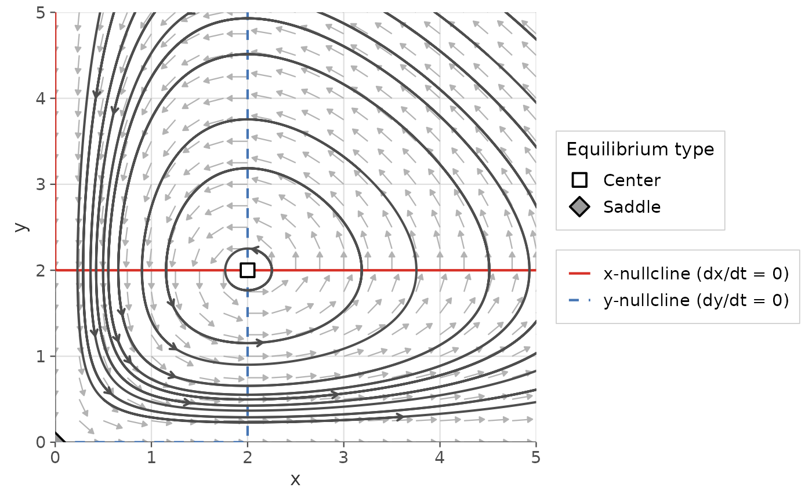
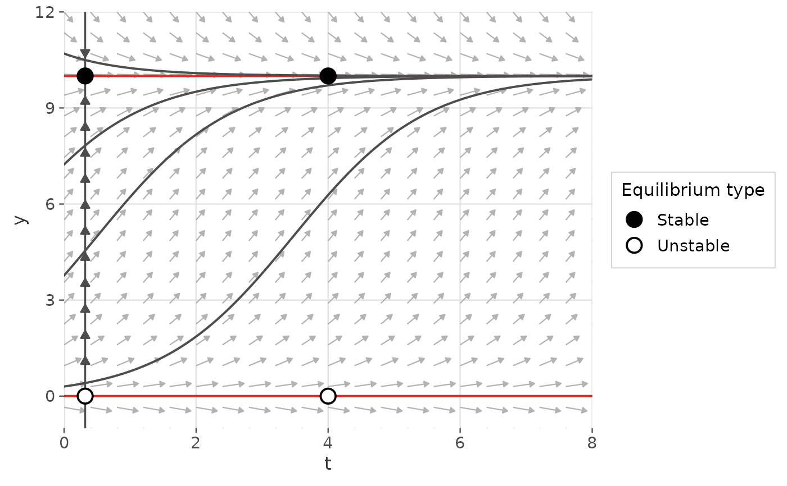
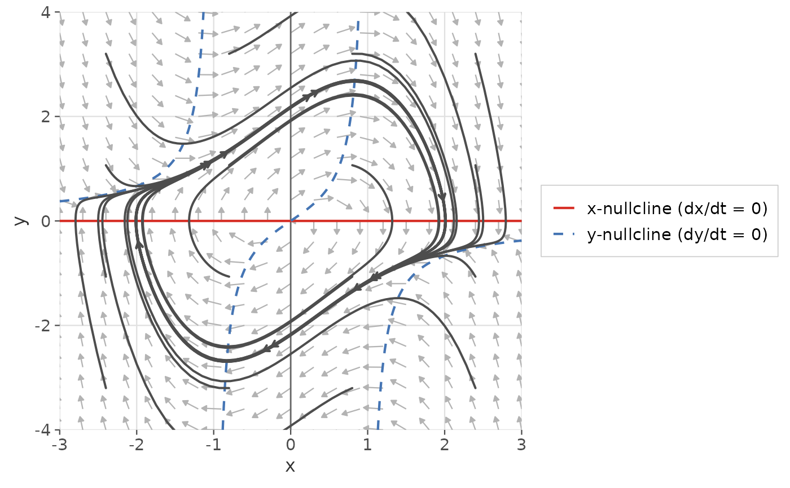
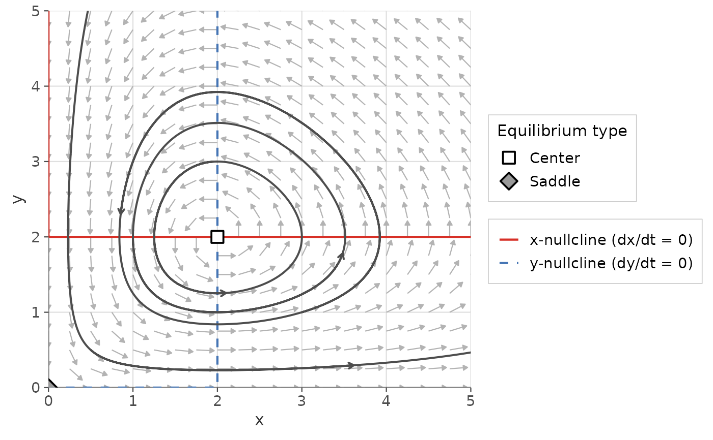
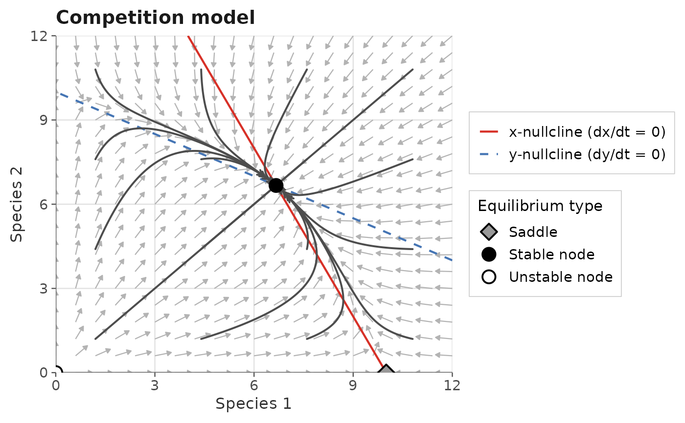

A high-level wrapper that produces a complete phase plane portrait for a one- or two-dimensional autonomous ODE system. By default generates a flow field, nullclines, and trajectories from an evenly-spaced grid of initial conditions. Optionally finds, classifies, and annotates all equilibria automatically.
Usage
gg_phase_plane(
deriv,
xlim,
ylim,
system = c("two.dim", "one.dim"),
parameters = NULL,
n_points = 21L,
arrow_type = c("equal", "proportional"),
arrow_color = "grey70",
show_nullclines = TRUE,
nullcline_n_points = 250L,
y0 = NULL,
show_trajectories = TRUE,
n_ic = 4L,
t_end = 10,
t_start_back = NULL,
trajectory_color = "grey30",
find_equilibria = TRUE,
eq_n_grid = 10L,
eq_grid_y0 = NULL,
legend_position = "right",
xlab = NULL,
ylab = "y",
title = NULL
)Arguments
- deriv
A function describing the ODE system, in Convention A or B. See ggphasr-package for details.
- xlim
Numeric vector of length 2. x-axis range. Required.
- ylim
Numeric vector of length 2. y-axis range. Required.
- system
Character:
"two.dim"(default) or"one.dim".- parameters
Parameter vector or list passed to
deriv.- n_points
Integer. Flow field grid resolution. Default:
21.- arrow_type
Character:
"equal"(default) or"proportional".- arrow_color
Character. Flow field arrow color. Default:
"grey70".- show_nullclines
Logical. Whether to draw nullclines. Default:
TRUE.- nullcline_n_points
Integer. Nullcline grid resolution. Default:
250.- y0
Initial condition(s) for trajectories. A numeric vector, matrix, or list as accepted by
gg_trajectory(). IfNULL(default), a regular grid ofn_ic x n_icinitial conditions is used automatically.- show_trajectories
Logical. Whether to draw trajectories. Default:
TRUE.- n_ic
Integer. Number of auto-generated initial conditions per axis (ignored when
y0is supplied). Default:4(giving 16 ICs for 2D systems, 4 for 1D).- t_end
Numeric. Forward integration time. Default:
10.- t_start_back
Numeric or
NULL. Backward integration time. Default:NULL.- trajectory_color
Character or
NULL. IfNULL(default) and multiple ICs are used, each trajectory gets a distinct color. If a color string, all trajectories share that color.- find_equilibria
Logical. Whether to automatically find, classify, and annotate equilibria. Default:
TRUE. Uses a grid search overxlimxylim.- eq_n_grid
Integer. Grid resolution for equilibrium search. Default:
10.- eq_grid_y0
List or
NULL. Custom starting points for the equilibrium search. IfNULL, a regular grid is used.- legend_position
Character string or numeric vector of length 2. Controls the position of all legends (equilibrium types, nullclines) in the plot. One of
"right"(default),"left","top","bottom","none","inside"(compact legend in the top-right corner of the panel), or a numeric vectorc(x, y)with values in[0, 1]for a custom inside position. Passing"inside"is the most effective way to reclaim plot space when the external legend is too large.- xlab
Character. x-axis label. Default:
"x"(2D) or"t"(1D).- ylab
Character. y-axis label. Default:
"y".- title
Character or
NULL. Plot title. Default:NULL.
Value
A named list with two elements:
plotA
ggplot2::ggplot()object.equilibriaA data frame of classified equilibria (from
classify_equilibrium()), orNULLiffind_equilibria = FALSEor no equilibria were found.
Details
Returns a named list so that both the plot and the equilibrium table are immediately accessible:
result <- gg_phase_plane(ode_lotka_volterra, ...)
result$plot # the ggplot object
result$equilibria # data frame of classified equilibriaThe $plot component is a standard ggplot2::ggplot() object and can
be further customized with +.
Examples
# Minimal call: produces everything automatically
result <- gg_phase_plane(
ode_lotka_volterra,
xlim = c(0, 5),
ylim = c(0, 5),
parameters = c(alpha = 1, beta = 0.5, delta = 0.5, gamma = 1)
)
result$plot

result$equilibria[, c("x", "y", "classification")]
#> x y classification
#> 1 0 0 Saddle
#> 2 2 2 Center
# 1D system
result <- gg_phase_plane(
ode_logistic,
xlim = c(0, 8),
ylim = c(-1, 12),
system = "one.dim",
parameters = c(r = 1, K = 10)
)
result$plot

# Suppress equilibrium search for speed
result <- gg_phase_plane(
ode_van_der_pol,
xlim = c(-3, 3),
ylim = c(-4, 4),
parameters = c(mu = 1),
find_equilibria = FALSE,
t_end = 20
)
result$plot

# Supply custom initial conditions
ics <- matrix(c(0.5,0.5, 1,2, 3,1, 2,3), ncol=2, byrow=TRUE)
result <- gg_phase_plane(
ode_lotka_volterra,
xlim = c(0, 5),
ylim = c(0, 5),
parameters = c(alpha=1, beta=0.5, delta=0.5, gamma=1),
y0 = ics
)
result$plot

# Further customize the returned plot
result <- gg_phase_plane(
ode_competition,
xlim = c(0, 12),
ylim = c(0, 12),
parameters = c(r1=1, r2=1, K1=10, K2=10, a12=0.5, a21=0.5)
)
result$plot +
ggplot2::labs(x = "Species 1", y = "Species 2",
title = "Competition model")
